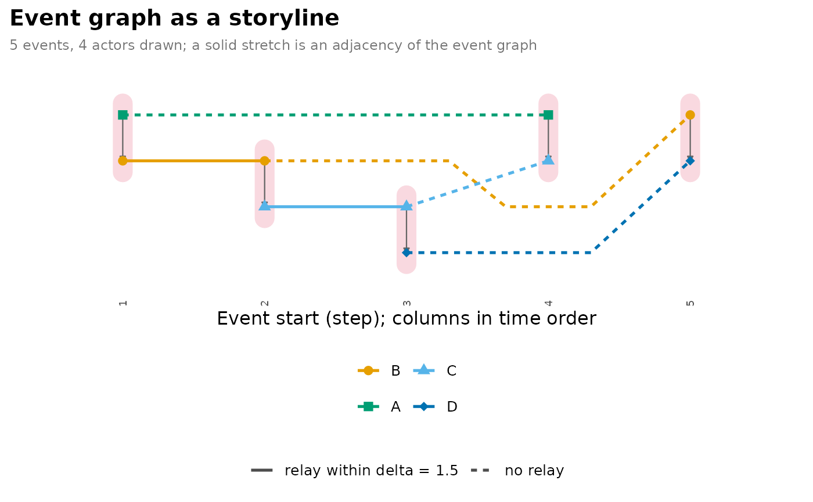
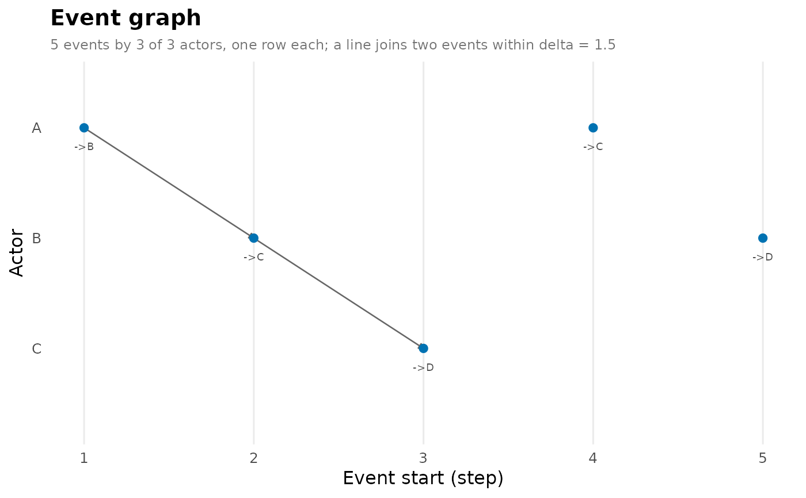

type = "storyline", the default, draws the event graph as a storyline
(Tanahashi and Ma, 2012): every actor
is a line through time, and every event is a column that gathers the lines
of its two endpoints in a light crimson capsule. The stretch of an actor's
line between two of its events is solid when the event graph joins them
through that actor, so something the actor received in the first could be
passed on in the second, and dashed when it does not, because the wait
exceeds delta or the direction of the events forbids it. On a directed
network an arrow in each column runs from the source to the target.
Usage
# S3 method for class 'dynet_event_graph'
plot(
x,
type = c("storyline", "events"),
top = 8L,
start = NULL,
end = NULL,
rows = c("actor", "chain"),
color_by = NULL,
labels = FALSE,
palette = "okabe",
node_size = 2.5,
node_shape = c(16, 17, 15, 18, 8, 4, 3, 1, 0),
line_width = 0.9,
line_alpha = 1,
relay_style = "solid",
no_relay_style = "22",
capsule_color = "#DC143C",
capsule_alpha = 0.16,
capsule_width = 6,
arrows = TRUE,
arrow_color = "grey40",
arrow_width = 0.4,
arrow_size = 0.12,
base_size = 12,
label_size = 7,
...
)Arguments
- x
An event graph returned by
event_graph().- type
"storyline"(the default for ties) draws actors as lines through the events;"events"(the default for messages) draws events as points joined by lines. A storyline of messages raisesdynet_bad_input.- top
The number of actors drawn, those in the most events (ties by name);
8by default.NULLdraws every actor. In a storyline, columns are the events that involve at least one drawn actor; in the events view withrows = "actor", the events whose source is drawn. Ignored byrows = "chain", which draws every event in the period.- start, end
Draw only events starting in this period. Default to the whole network.
- rows
For
type = "events","actor"(the default) gives every source a row;"chain"gives every relay chain a row.- color_by
For
type = "events", the name of a column ofas.data.frame(x)(for example a tie attribute,"from"or"to") whose values colour and shape the points.NULL, the default, draws every point alike.- labels
For
type = "events", whether to write the event under each point:->towithrows = "actor", whose row already names the source, andfrom->towithrows = "chain".FALSEby default.- palette
Actor line colours, or under
type = "events"the colours of thecolor_byvalues:"okabe"(the default; Okabe-Ito without its yellow, which is too faint for a thin line),"extended","many", a vector of colours recycled over the actors, or a function ofnreturningncolours.- node_size
Size of the points where a line meets its events;
2.5by default.- node_shape
Point shapes, recycled over the actors (or the
color_byvalues); ggplot shape codes. The default cycles nine shapes, so the first 72 actors differ in their pair of colour and shape.- line_width, line_alpha
Width and opacity of the actor lines, or of the arcs under
type = "events";0.9and1by default.- relay_style, no_relay_style
Line types of a stretch that is an adjacency of the event graph and of one that is not;
"solid"and"22"(dashed) by default. Any ggplot line type.- capsule_color, capsule_alpha, capsule_width
Colour, opacity and width of the capsule gathering the endpoints of an event; a light crimson (
"#DC143C"at0.16) of width6by default.- arrows
Whether to draw the source-to-target arrow in each column of a directed network;
TRUEby default.- arrow_color, arrow_width, arrow_size
Colour, line width and head length (in centimetres) of those arrows;
"grey40",0.4and0.12by default. Undertype = "events",arrow_colorandarrow_sizestyle the arcs and their heads, andarrows = FALSEdrops the heads.- base_size
Base font size of the theme;
12by default.- label_size
Size, in points, of the time labels under the columns, or of the
labelstext undertype = "events";7by default.- ...
Ignored.
Value
A ggplot object, so titles, themes and scales can be added with
+. Raises dynet_bad_input for a malformed top, start, end,
color_by, labels or styling argument, dynet_bad_palette for an unusable palette,
capsule_color or arrow_color, and dynet_empty_result when no event
starts in the period.
Details
Columns are events in time order, spaced by order rather than by elapsed
time, and labelled with their start. Lines are ordered by the barycentre
rule (Sugiyama et al., 1981) over repeated sweeps, keeping the ordering
with the fewest crossings, as in the storyline of the hypergraphs
package. Each actor has its own colour and point shape, so no actor is
told by colour alone.
type = "events" draws the events themselves as the vertices. Each event
is a point at its start time, and each adjacency is a line from the
earlier event to the later one. With rows = "actor", the default, every
source has its own row, in the order of its first event, so a line runs
from the row of the actor whose event was taken further to the row of the
actor who took it. With rows = "chain", events are grouped into relay
chains, the weakly connected components of the event graph among the
events drawn, every chain has its own row ordered by its first event, and
adjacencies are arcs above the row; a row of one point is an event that
relays nothing and continues nothing within delta. color_by colours
and shapes the points by a column of the event table, such as a tie
attribute. An event graph of messages (events = "messages") is drawn
this way by default, because a message gathers several actors at once
and has no storyline.
References
Tanahashi, Y., & Ma, K.-L. (2012). Design considerations for optimizing storyline visualizations. IEEE Transactions on Visualization and Computer Graphics, 18(12), 2679-2688. doi:10.1109/TVCG.2012.212
Sugiyama, K., Tagawa, S., & Toda, M. (1981). Methods for visual understanding of hierarchical system structures. IEEE Transactions on Systems, Man, and Cybernetics, 11(2), 109-125. doi:10.1109/TSMC.1981.4308636
Examples
dn <- dynet(data.frame(
from = c("A", "B", "C", "A", "B"), to = c("B", "C", "D", "C", "D"),
time = c(1, 2, 3, 4, 5)
))
eg <- event_graph(dn, delta = 1.5)
plot(eg)

plot(eg, type = "events", labels = TRUE)
